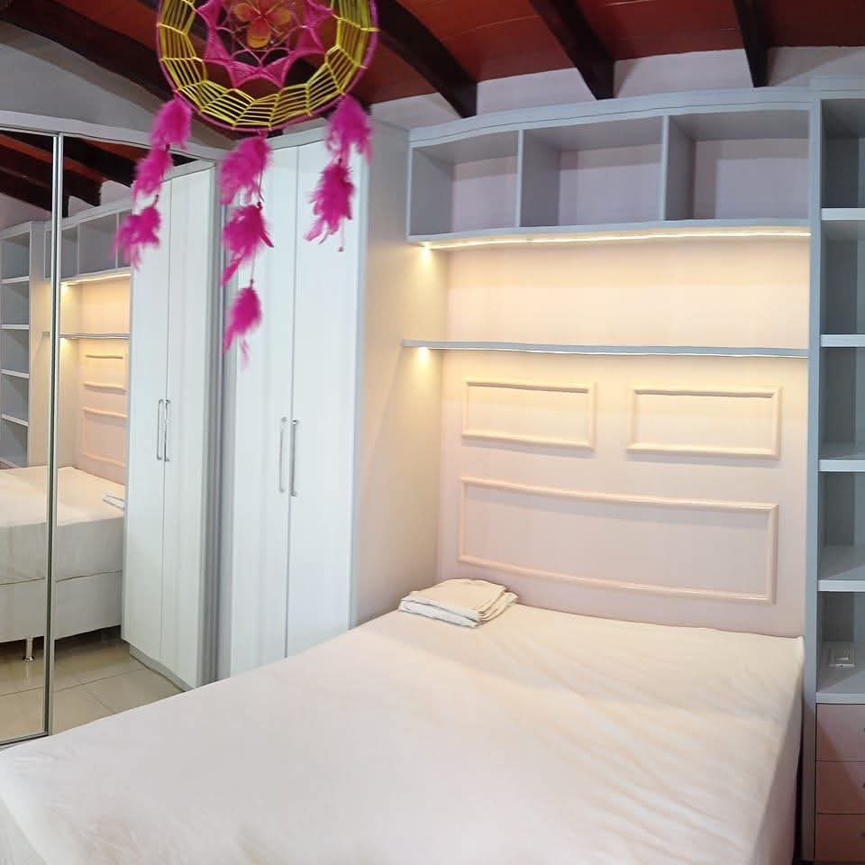

Mathias Muebles es especializado em traer mas comodidad y estilo a su ambiente, siempre con la mejor madera y sevicio para su hogar o trabajo.
Aqui van algunos motivos para elegir Mathias Muebles:
- Transforma tu espacio: Dale a tu hogar un toque de lujo con muebles hechos a medida que reflejen tu gusto y estilo de vida.
- Organización y estilo: Organización es sinónimo de paz. Los muebles planificados traen orden a su hogar. ¡La desorganización nunca más!
- Calidad duradera: Materiales de primera línea para muebles que resisten la prueba del tiempo. Invierta en calidad y asegure muebles que duren generaciones.
- Comodidad y funcionalidad: Entendemos lo que valoras y estamos aquí para hacer de tu hogar un lugar perfecto para ti. Su comodidad es nuestra prioridad.
Mesita Rustica
Eleve su hogar o espacio al aire libre con la belleza natural y la durabilidad de nuestra mesa de madera rústica hecho a mano. Hecho de madera recuperada de alta calidad, esta mesa no solo agrega un toque de elegancia sino que también resiste la prueba del tiempo.

- Belleza artesanal: Cada pieza es meticulosamente elaborada por artesanos expertos, asegurando un producto único y duradero.
- Diseño versátil: Perfecto para ambientes interiores y exteriores, esta mesa puede ser la pieza central de su sala de estar, patio o jardín.
- Comodidad y estilo: El diseño ergonómico garantiza comodidad en la hora de su tereré, mientras que el acabado natural complementa cualquier decoración.
- Amigo de la Naturaleza: Mediante el uso de madera recuperada, contribuimos a prácticas sostenibles y reducimos el impacto ambiental, trayendo una rica historia y un encanto rústico incomparable.
Sillon de Madera
Descubra la combinación perfecta de elegancia y fuerza con nuestra Silla de Madera con Estructura de Metal. Este modelo único combina el encanto natural de la madera con la robustez del metal, creando una pieza que se destaca en cualquier entorno.
Comodidad y ergonomía El asiento y el respaldo están diseñados para ofrecer el máximo confort, ideal para momentos de relajación. La ergonomía cuidadosa garantiza que disfrute de un asiento cómodo, incluso después de largos períodos de uso.
.jpeg)
Escritorio de Recepción
¡Transforma la Primera Impresión de Tu Negocio con Nuestro Escritorio de Recepción!
La recepción es mucho más que un mueble es la puerta de entrada al éxito de su negocio. Nuestro Escritorio de Recepción está diseñado para elevar la experiencia de sus visitantes combinando funcionalidad y estilo.
HECHO SOBRE ENCOMIENDA!

Habitaciones Modulada
Eleve su espacio con nuestra habitacione modulada, diseñadas para optimizar cada centímetro de su habitación, proporcionando una estética elegante y moderna. Ya sea que desee transformar un rincón acogedor o una espaciosa suite principal, nuestras soluciones moduladas para dormitorios ofrecen la combinación perfecta de funcionalidad y estilo.
Aqui van algunos motivos para elegir el estilo de su dormitorio con nosotros:
- Optimización del espacio: Nuestro dormitorio seran diseñados para maximizar el almacenamiento sin sacrificar el estilo. Con opciones como módulos aerodinámicos, puede utilizar el espacio de la pared de manera eficiente mientras mantiene su habitación libre de desorden y organizada.
- Diseño personalizado: Elija entre una variedad de colores, acabados y configuraciones para crear una habitación que realmente refleje su gusto personal. Desde minimalista y neutral hasta vibrante y audaz, tenemos la solución perfecta para usted.
- Soluciones versátiles: Perfecto para apartamentos pequeños, casas de familia o residencias de lujo, nuestros diseños de dormitorios modulados se pueden adaptar a cualquier espacio. Ya sea que necesite una solución compacta para una habitación individual o una configuración completa para una suite principal, tenemos las opciones adecuadas para usted.
- Materiais de Alta Qualidade: Trabalhada a partir de materiais premium, a nossa mobília de quarto modulada é construída para durar. Cada peça é projetada para suportar o uso diário, mantendo sua beleza e funcionalidade.